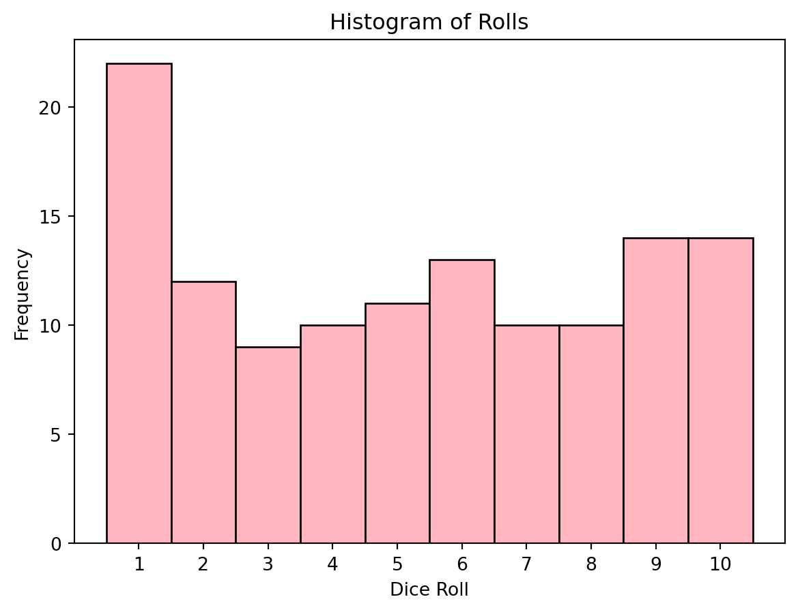

Show Code
import pandas as pd
import matplotlib.pyplot as plt
from scipy.stats import chisquare
import numpy as np
data = pd.read_csv("marioparty.csv")
np.random.seed(1)
In Mario Party Jamboree, players roll a 10-sided die to determine how far they will travel on their turn. A player can also hold the A button to spin the die faster, also referred to as “charging”. After playing the game a few times I was curious as to how the randomness of the rolls worked decided to explore the question myself. The two questions we are going to explore are:
As far as we can tell, the die are fair and a player has an even chance of rolling any number.
Holding the A button does not have a statistically significant effect on roll outcomes.
import pandas as pd
import matplotlib.pyplot as plt
from scipy.stats import chisquare
import numpy as np
data = pd.read_csv("marioparty.csv")
np.random.seed(1)In order to answer these questions, I played a few games of Mario Party with my wife with each of us holding the A buttons, while the NPC’s (Non Player Characters) don’t charge. In total I collected 125 samples, with 59 being charged rolls and 66 uncharged. While there are some effects in the game that control dice outcomes, these have been excluded from the samples.
| Charged | Uncharged | Total |
|---|---|---|
| 59 | 66 | 125 |
bin_edges = range(1, 12)
plt.hist(data['Number'], bins=bin_edges, color='lightpink', edgecolor='black', align='mid')
plt.title('Histogram of Rolls')
plt.ylabel('Frequency')
plt.xlabel('Dice Roll')
bin_centers = [i + 0.5 for i in range(1, 11)]
plt.xticks(bin_centers, labels=range(1, 11))
plt.show()
The rolls have a pretty strong positive-skew with the mode at 1, but outside this peak appears uniform. To analyze, we can perform a Chi-Squared Goodness of Fit Test to see whether or not the observed data fits a uniform distribution.
\[ H_0: \text {The dice follow a uniform distribution} \]
\[ H_a: \text {The dice do not follow a uniform distribution} \]
n_faces = 10
observed_freq, bin_edges = np.histogram(data['Number'], bins=n_faces)
total_count = len(data['Number'])
expected_freq = np.full(n_faces, total_count / n_faces)
chi2_stat, p_value = chisquare(f_obs=observed_freq, f_exp=expected_freq)
print(f"Chi-Squared Statistic: {chi2_stat:.2f}")
print(f"P-Value: {p_value:.2f}")Chi-Squared Statistic: 10.28
P-Value: 0.33As our P-Value for our Chi-Squared Goodness of Fit test is .33, we fail to reject the null hypothesis as there is insufficient evidence to suggest that the dice do not follow a uniform distribution.
All three (Chi-Squared GOF, Kolmogorov-Smirnov, and Bootstrap DOF) tests performed resulted in an insignificant p-value, meaning that we did not have sufficient evidence to suggest that the the dice aren’t fair or able to be modeled accurately by a uniform distribution, and that holding the A button to charge the dice does not give any advantage.
To more accurately test this in the future, I could collect more samples, as well as samples from other human players as all charged samples came from humans and all uncharged samples came from NPC’s (Non-Player Characters). (This was done because we didn’t have extra controllers, and the NPC’s don’t charge dice).